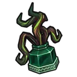

Raízes da Desolação
Ervas medicinais · Tier 11 · Nível 33
Até mesmo nos lugares mais isolados e áridos, a vida... encontra um meio.
Atributos
Ataque
135
Vida
34
Economia
Valor
1.550.000
Tempo de fabricação
11h
XP do comerciante
97.500
Trabalhadores: Herborista 27, Sacerdotisa 23, Feiticeiro 20
Receita


Marcos do projeto
6
Tempo de fabricação -20%
16
-68 Ervas
28
Valor +25%
45
-20 Óleo
70
Chance de qualidade +1